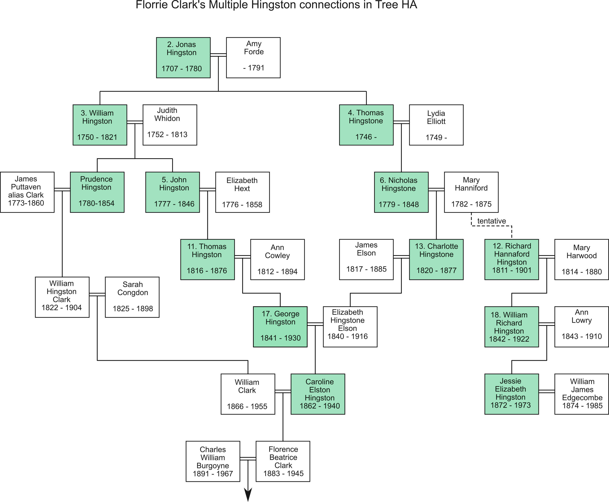

My own interest stems from the fact that my paternal grandmother had three separate sets of Hingstons in her ancestry. She came from Aveton Gifford in South Devon, for which I have transcribed the parish registers, and for which I act as Online Parish Clerk. I spent many years trying to trace them back, but they proved elusive, despite the fact that they all came from the same area. I had been searching for the link, on and off, for about 30 years, and had concluded that the only way to find the link was to seek ALL the Hingston births, marriages and deaths in the area. In 1999 I found out about the Vine Tree, which showed that there had been an earlier study of the family, now lost, and I was also aware that the Hingstons were rooted near, or even in, Aveton Gifford, where all my family originated. There was known to be a "de Hynddeston" family near Aveton Gifford in the 14th Century, and this name seems to have been corrupted over the next 200 years or so to Hingeston and then Hingston. So foolishly I assumed that a One-Name study would yield quick results.
I eventually found that my grandmother's Hingstons all came from the same tree, which I now call Tree HA, but the interconnections are spread over six generations, as shown in the chart below.
